358 Orte
 Afrodisias Müzesi ve ÖrenyeriAydın · Ausgrabungsstätte
Afrodisias Müzesi ve ÖrenyeriAydın · Ausgrabungsstätte Ani ÖrenyeriKars · Ausgrabungsstätte
Ani ÖrenyeriKars · Ausgrabungsstätte Arslantepe ÖrenyeriMalatya · Ausgrabungsstätte
Arslantepe ÖrenyeriMalatya · Ausgrabungsstätte Bergama Akropolüİzmir · Ausgrabungsstätte
Bergama Akropolüİzmir · Ausgrabungsstätte Bergama Asklepion Örenyeriİzmir · Ausgrabungsstätte
Bergama Asklepion Örenyeriİzmir · Ausgrabungsstätte Bergama Kızılavluİzmir · Ausgrabungsstätte
Bergama Kızılavluİzmir · Ausgrabungsstätte Derinkuyu Yeraltı ŞehriNevşehir · Unterirdische Stadt
Derinkuyu Yeraltı ŞehriNevşehir · Unterirdische Stadt Efesİzmir · Ausgrabungsstätte
Efesİzmir · Ausgrabungsstätte El Nazar KilisesiNevşehir · Sakralbau
El Nazar KilisesiNevşehir · Sakralbau Gordion MüzesiAnkara · Museum
Gordion MüzesiAnkara · Museum GöbeklitepeŞanlıurfa · Ausgrabungsstätte
GöbeklitepeŞanlıurfa · Ausgrabungsstätte Göreme ÖrenyeriNevşehir · Ausgrabungsstätte
Göreme ÖrenyeriNevşehir · Ausgrabungsstätte HattuşaÇorum · Ausgrabungsstätte
HattuşaÇorum · Ausgrabungsstätte Hierapolis (Pamukkale) ÖrenyeriDenizli · Ausgrabungsstätte
Hierapolis (Pamukkale) ÖrenyeriDenizli · Ausgrabungsstätte Karanlık Kilise (Göreme)Nevşehir · Sakralbau
Karanlık Kilise (Göreme)Nevşehir · Sakralbau Kaymaklı Yeraltı ŞehriNevşehir · Unterirdische Stadt
Kaymaklı Yeraltı ŞehriNevşehir · Unterirdische Stadt Nemrut DağıAdıyaman · Ausgrabungsstätte
Nemrut DağıAdıyaman · Ausgrabungsstätte TroyaÇanakkale · Ausgrabungsstätte
TroyaÇanakkale · Ausgrabungsstätte Xanthos ÖrenyeriAntalya · Ausgrabungsstätte
Xanthos ÖrenyeriAntalya · Ausgrabungsstätte Zelve - Paşabağlar ÖrenyeriNevşehir · Ausgrabungsstätte
Zelve - Paşabağlar ÖrenyeriNevşehir · Ausgrabungsstätte Çatalhöyük ÖrenyeriKonya · Ausgrabungsstätte
Çatalhöyük ÖrenyeriKonya · Ausgrabungsstätte Çavuşin Örenyeri (Çavuşin Kilisesi)Nevşehir · Ausgrabungsstätte
Çavuşin Örenyeri (Çavuşin Kilisesi)Nevşehir · Ausgrabungsstätte 15 Temmuz Demokrasi MüzesiAnkara · Museum
15 Temmuz Demokrasi MüzesiAnkara · Museum Adam Mickiewicz Müzesiİstanbul · Museum
Adam Mickiewicz Müzesiİstanbul · Museum Adana Atatürk Evi MüzesiAdana · Museum
Adana Atatürk Evi MüzesiAdana · Museum Adana MüzesiAdana · Museum
Adana MüzesiAdana · Museum Adıyaman MüzesiAdıyaman · Museum
Adıyaman MüzesiAdıyaman · Museum Afyonkarahisar MüzesiAfyonkarahisar · Museum
Afyonkarahisar MüzesiAfyonkarahisar · Museum Agora Örenyeriİzmir · Ausgrabungsstätte
Agora Örenyeriİzmir · Ausgrabungsstätte Ahlat MüzesiBitlis · Museum
Ahlat MüzesiBitlis · Museum Ahlat Selçuklu MezarlığıBitlis · AusgrabungsstätteAigai ÖrenyeriManisa · Ausgrabungsstätte
Ahlat Selçuklu MezarlığıBitlis · AusgrabungsstätteAigai ÖrenyeriManisa · Ausgrabungsstätte Aizanoi ÖrenyeriKütahya · AusgrabungsstätteAkdamar Anıt MüzesiVan · MuseumAksaray Manastır Vadisi ÖrenyeriAksaray · Ausgrabungsstätte
Aizanoi ÖrenyeriKütahya · AusgrabungsstätteAkdamar Anıt MüzesiVan · MuseumAksaray Manastır Vadisi ÖrenyeriAksaray · Ausgrabungsstätte Aksaray MüzesiAksaray · Museum
Aksaray MüzesiAksaray · Museum Akşehir Nasreddin Hoca Arkeoloji ve Etnografya MüzesiKonya · MuseumAkşemsettin TürbesiBolu · Sakralbau
Akşehir Nasreddin Hoca Arkeoloji ve Etnografya MüzesiKonya · MuseumAkşemsettin TürbesiBolu · Sakralbau Alabanda ÖrenyeriAydın · Ausgrabungsstätte
Alabanda ÖrenyeriAydın · Ausgrabungsstätte Alacahöyük Müzesi ve ÖrenyeriÇorum · AusgrabungsstätteAlaeddin Yavaşça Müze EviKilis · Museum
Alacahöyük Müzesi ve ÖrenyeriÇorum · AusgrabungsstätteAlaeddin Yavaşça Müze EviKilis · Museum Alahan ManastırıMersin · SakralbauAlanya Atatürk Evi MüzesiAntalya · Museum
Alahan ManastırıMersin · SakralbauAlanya Atatürk Evi MüzesiAntalya · Museum Alanya KalesiAntalya · Burg & historisches Bauwerk
Alanya KalesiAntalya · Burg & historisches Bauwerk Alanya MüzesiAntalya · Museum
Alanya MüzesiAntalya · Museum Alaşehir ÖrenyeriManisa · Ausgrabungsstätte
Alaşehir ÖrenyeriManisa · Ausgrabungsstätte Alexandria Troas ÖrenyeriÇanakkale · Ausgrabungsstätte
Alexandria Troas ÖrenyeriÇanakkale · Ausgrabungsstätte Alinda ÖrenyeriAydın · Ausgrabungsstätte
Alinda ÖrenyeriAydın · Ausgrabungsstätte Amasra MüzesiBartın · Museum
Amasra MüzesiBartın · Museum Amasya MüzesiAmasya · Museum
Amasya MüzesiAmasya · Museum Amintas Kaya MezarıMuğla · Ausgrabungsstätte
Amintas Kaya MezarıMuğla · Ausgrabungsstätte Anadolu Medeniyetleri MüzesiAnkara · MuseumAnamur MüzesiMersin · Museum
Anadolu Medeniyetleri MüzesiAnkara · MuseumAnamur MüzesiMersin · Museum Anavarza ÖrenyeriAdana · Ausgrabungsstätte
Anavarza ÖrenyeriAdana · Ausgrabungsstätte Anemurium ÖrenyeriMersin · Ausgrabungsstätte
Anemurium ÖrenyeriMersin · Ausgrabungsstätte Antalya Atatürk Evi MüzesiAntalya · Museum
Antalya Atatürk Evi MüzesiAntalya · Museum Antalya Etnografya MüzesiAntalya · Museum
Antalya Etnografya MüzesiAntalya · Museum Antalya MüzesiAntalya · MuseumAntalya Nekropol MüzesiAntalya · Museum
Antalya MüzesiAntalya · MuseumAntalya Nekropol MüzesiAntalya · Museum Antalya Syedra Antik KentiAntalya · Ausgrabungsstätte
Antalya Syedra Antik KentiAntalya · Ausgrabungsstätte Antiocheia ÖrenyeriIsparta · Ausgrabungsstätte
Antiocheia ÖrenyeriIsparta · Ausgrabungsstätte Apollon Smintheion ÖrenyeriÇanakkale · Ausgrabungsstätte
Apollon Smintheion ÖrenyeriÇanakkale · Ausgrabungsstätte Arsemeia ÖrenyeriAdıyaman · Ausgrabungsstätte
Arsemeia ÖrenyeriAdıyaman · Ausgrabungsstätte Arykanda ÖrenyeriAntalya · Ausgrabungsstätte
Arykanda ÖrenyeriAntalya · Ausgrabungsstätte AspendosAntalya · Ausgrabungsstätte
AspendosAntalya · Ausgrabungsstätte Assos ÖrenyeriÇanakkale · AusgrabungsstätteAtatürk Evi MüzesiDiyarbakır · MuseumAtatürk ve Etnografya MüzesiUşak · Museum
Assos ÖrenyeriÇanakkale · AusgrabungsstätteAtatürk Evi MüzesiDiyarbakır · MuseumAtatürk ve Etnografya MüzesiUşak · Museum Atatürk, Redif ve Etnografya MüzesiKocaeli · Museum
Atatürk, Redif ve Etnografya MüzesiKocaeli · Museum Atlas 1948 İstanbul Sinema Müzesiİstanbul · Museum
Atlas 1948 İstanbul Sinema Müzesiİstanbul · Museum Av Köşkü Saray MüzesiKocaeli · Museum
Av Köşkü Saray MüzesiKocaeli · Museum Ayasofya Tarih ve Deneyim Müzesiİstanbul · Museum
Ayasofya Tarih ve Deneyim Müzesiİstanbul · Museum Ayasuluk - St.Jean Örenyeriİzmir · Ausgrabungsstätte
Ayasuluk - St.Jean Örenyeriİzmir · Ausgrabungsstätte Ayasuluk Kalesiİzmir · Burg & historisches Bauwerk
Ayasuluk Kalesiİzmir · Burg & historisches Bauwerk Aydın Arkeoloji MüzesiAydın · Museum
Aydın Arkeoloji MüzesiAydın · Museum Aziz (St.) Nikolaos Anıt MüzesiAntalya · MuseumAziz Mercurius Yeraltı ŞehriAksaray · Unterirdische Stadt
Aziz (St.) Nikolaos Anıt MüzesiAntalya · MuseumAziz Mercurius Yeraltı ŞehriAksaray · Unterirdische Stadt Aşık Veysel MüzesiSivas · Museum
Aşık Veysel MüzesiSivas · Museum Aşıklı HöyükAksaray · AusgrabungsstätteBafra MüzesiSamsun · Museum
Aşıklı HöyükAksaray · AusgrabungsstätteBafra MüzesiSamsun · Museum Bandırma MüzesiBalıkesir · Museum
Bandırma MüzesiBalıkesir · Museum Batı Cephesi Karargahı MüzesiKonya · Museum
Batı Cephesi Karargahı MüzesiKonya · Museum Bayburt Baksı MüzesiBayburt · Museum
Bayburt Baksı MüzesiBayburt · Museum Bergama Müzesiİzmir · MuseumBeşkonaklar Etnografya Müzesi ve Geleneksel Malatya EviMalatya · MuseumBilecik MüzesiBilecik · Museum
Bergama Müzesiİzmir · MuseumBeşkonaklar Etnografya Müzesi ve Geleneksel Malatya EviMalatya · MuseumBilecik MüzesiBilecik · Museum Birgi Çakırağa Konağıİzmir · MuseumBitlis Etnografya MüzesiBitlis · Museum
Birgi Çakırağa Konağıİzmir · MuseumBitlis Etnografya MüzesiBitlis · Museum Blaundos ÖrenyeriUşak · Ausgrabungsstätte
Blaundos ÖrenyeriUşak · Ausgrabungsstätte Bodrum Antik TiyatrosuMuğla · AusgrabungsstätteBodrum Serçe Limanı Cam Batığı Sergi SalonuMuğla · Museum
Bodrum Antik TiyatrosuMuğla · AusgrabungsstätteBodrum Serçe Limanı Cam Batığı Sergi SalonuMuğla · Museum Bodrum Sualtı Arkeoloji MüzesiMuğla · Museum
Bodrum Sualtı Arkeoloji MüzesiMuğla · Museum Bolu MüzesiBolu · Museum
Bolu MüzesiBolu · Museum Boğazköy MüzesiÇorum · Museum
Boğazköy MüzesiÇorum · Museum Burdur MüzesiBurdur · Museum
Burdur MüzesiBurdur · Museum Bursa Arkeoloji MüzesiBursa · Museum
Bursa Arkeoloji MüzesiBursa · Museum Bursa Atatürk Evi MüzesiBursa · Museum
Bursa Atatürk Evi MüzesiBursa · Museum Bursa Türk İslam Eserleri MüzesiBursa · MuseumBursa İznik Göl BazilikasıBursa · Sakralbau
Bursa Türk İslam Eserleri MüzesiBursa · MuseumBursa İznik Göl BazilikasıBursa · Sakralbau Büyük Saray Mozaikleri Müzesiİstanbul · Museum
Büyük Saray Mozaikleri Müzesiİstanbul · Museum Cahit Sıtkı Tarancı Evi Etnografya MüzesiDiyarbakır · MuseumCehennemağzı MağaralarıZonguldak · Naturstätte
Cahit Sıtkı Tarancı Evi Etnografya MüzesiDiyarbakır · MuseumCehennemağzı MağaralarıZonguldak · Naturstätte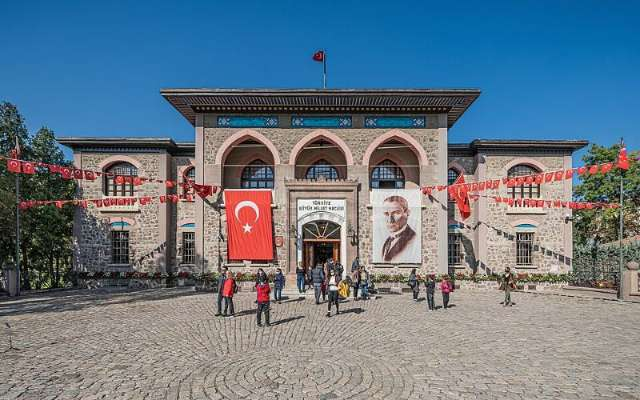
Cumhuriyet MüzesiAnkara · Museum Dara ÖrenyeriMardin · Ausgrabungsstätte
Dara ÖrenyeriMardin · Ausgrabungsstätte Denizli Atatürk ve Etnografya MüzesiDenizli · Museum
Denizli Atatürk ve Etnografya MüzesiDenizli · Museum Denizli Kent MüzesiDenizli · Museum
Denizli Kent MüzesiDenizli · Museum Denizli Tripolis ÖrenyeriDenizli · Ausgrabungsstätte
Denizli Tripolis ÖrenyeriDenizli · Ausgrabungsstätte Didim Apollon TapınağıAydın · Ausgrabungsstätte
Didim Apollon TapınağıAydın · Ausgrabungsstätte Diyarbakır Arkeoloji MüzesiDiyarbakır · MuseumDoğa Tarihi MüzesiBurdur · MuseumEdirne Hıdırlık Tabya Balkan Tarihi MüzesiEdirne · Museum
Diyarbakır Arkeoloji MüzesiDiyarbakır · MuseumDoğa Tarihi MüzesiBurdur · MuseumEdirne Hıdırlık Tabya Balkan Tarihi MüzesiEdirne · Museum Edirne Makedonya KulesiEdirne · Burg & historisches Bauwerk
Edirne Makedonya KulesiEdirne · Burg & historisches Bauwerk Edirne MüzesiEdirne · MuseumEfes Deneyim Müzesiİzmir · Museum
Edirne MüzesiEdirne · MuseumEfes Deneyim Müzesiİzmir · Museum Efes Müzesiİzmir · Museum
Efes Müzesiİzmir · Museum Efes Örenyeri-Yamaçevlerİzmir · AusgrabungsstätteElazığ MüzesiElâzığ · MuseumElbistan Şehir MüzesiKahramanmaraş · MuseumElmalı MüzesiAntalya · MuseumEreğli MüzesiKonya · MuseumErmenek Ahmet Keleşoğlu Arkeoloji ve Etnografya MüzesiKaraman · Museum
Efes Örenyeri-Yamaçevlerİzmir · AusgrabungsstätteElazığ MüzesiElâzığ · MuseumElbistan Şehir MüzesiKahramanmaraş · MuseumElmalı MüzesiAntalya · MuseumEreğli MüzesiKonya · MuseumErmenek Ahmet Keleşoğlu Arkeoloji ve Etnografya MüzesiKaraman · Museum Erzincan MüzesiErzincan · Museum
Erzincan MüzesiErzincan · Museum Erzurum Atatürk Evi MüzesiErzurum · Museum
Erzurum Atatürk Evi MüzesiErzurum · Museum Erzurum KalesiErzurum · Burg & historisches Bauwerk
Erzurum KalesiErzurum · Burg & historisches Bauwerk Erzurum MüzesiErzurum · MuseumErzurum Resim Heykel MüzesiErzurum · Museum
Erzurum MüzesiErzurum · MuseumErzurum Resim Heykel MüzesiErzurum · Museum Eti Arkeoloji MüzesiEskişehir · Museum
Eti Arkeoloji MüzesiEskişehir · Museum Etnografya MüzesiAnkara · Museum
Etnografya MüzesiAnkara · Museum Fethiye Gemile AdasıMuğla · Ausgrabungsstätte
Fethiye Gemile AdasıMuğla · Ausgrabungsstätte Fethiye Kayaköy ÖrenyeriMuğla · Ausgrabungsstätte
Fethiye Kayaköy ÖrenyeriMuğla · Ausgrabungsstätte Fethiye Letoon ÖrenyeriMuğla · Ausgrabungsstätte
Fethiye Letoon ÖrenyeriMuğla · Ausgrabungsstätte Fethiye Müzesiİstanbul · MuseumFethiye MüzesiMuğla · Museum
Fethiye Müzesiİstanbul · MuseumFethiye MüzesiMuğla · Museum Fethiye Pınara ÖrenyeriMuğla · Ausgrabungsstätte
Fethiye Pınara ÖrenyeriMuğla · Ausgrabungsstätte Fethiye Tlos ÖrenyeriMuğla · AusgrabungsstätteFilyos(Tios) ÖrenyeriZonguldak · Ausgrabungsstätte
Fethiye Tlos ÖrenyeriMuğla · AusgrabungsstätteFilyos(Tios) ÖrenyeriZonguldak · Ausgrabungsstätte Galata Mevlevihanesi Müzesiİstanbul · Museum
Galata Mevlevihanesi Müzesiİstanbul · Museum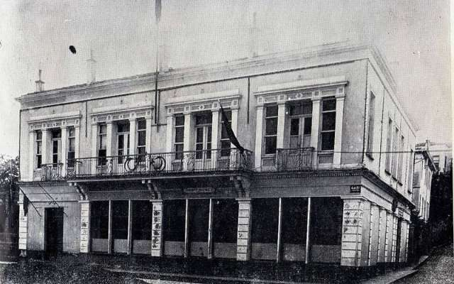
Gazi MüzesiSamsun · Museum Gaziantep Arkeoloji MüzesiGaziantep · Museum
Gaziantep Arkeoloji MüzesiGaziantep · Museum Gaziantep KalesiGaziantep · Burg & historisches BauwerkGermanicia Mozaikli AlanKahramanmaraş · AusgrabungsstätteGiresun MüzesiGiresun · Museum
Gaziantep KalesiGaziantep · Burg & historisches BauwerkGermanicia Mozaikli AlanKahramanmaraş · AusgrabungsstätteGiresun MüzesiGiresun · Museum Gözne KalesiMersin · Burg & historisches Bauwerk
Gözne KalesiMersin · Burg & historisches Bauwerk Gülşehir-St.Jean KilisesiNevşehir · SakralbauGümüşhane MüzesiGümüşhane · Museum
Gülşehir-St.Jean KilisesiNevşehir · SakralbauGümüşhane MüzesiGümüşhane · Museum Gümüşler Manastırı ve Yeraltı ŞehriNiğde · Unterirdische Stadt
Gümüşler Manastırı ve Yeraltı ŞehriNiğde · Unterirdische Stadt Güpgüpoğlu Konağı Etnografya MüzesiKayseri · Museum
Güpgüpoğlu Konağı Etnografya MüzesiKayseri · Museum Hacıbektaş MüzesiNevşehir · MuseumHadrianopolis ÖrenyeriKarabük · Ausgrabungsstätte
Hacıbektaş MüzesiNevşehir · MuseumHadrianopolis ÖrenyeriKarabük · Ausgrabungsstätte Hafıza 15 Temmuz Müzesiİstanbul · Museum
Hafıza 15 Temmuz Müzesiİstanbul · Museum Haleplibahçe Mozaik MüzesiŞanlıurfa · MuseumHamidiye Tabyası ve Çanakkale Savaşları Tarihi MüzesiÇanakkale · Museum
Haleplibahçe Mozaik MüzesiŞanlıurfa · MuseumHamidiye Tabyası ve Çanakkale Savaşları Tarihi MüzesiÇanakkale · Museum Harput KalesiElâzığ · Burg & historisches Bauwerk
Harput KalesiElâzığ · Burg & historisches Bauwerk Harran ÖrenyeriŞanlıurfa · Ausgrabungsstätte
Harran ÖrenyeriŞanlıurfa · Ausgrabungsstätte Hasankeyf Müzesi ve ÖrenyeriBatman · Ausgrabungsstätte
Hasankeyf Müzesi ve ÖrenyeriBatman · Ausgrabungsstätte Hatay Arkeoloji MüzesiHatay · MuseumHatay Necmi Asfuroğlu Arkeoloji MüzesiHatay · Museum
Hatay Arkeoloji MüzesiHatay · MuseumHatay Necmi Asfuroğlu Arkeoloji MüzesiHatay · Museum Hazeranlar KonağıAmasya · Museum
Hazeranlar KonağıAmasya · Museum Hierapolis (Pamukkale) Arkeoloji MüzesiDenizli · Museum
Hierapolis (Pamukkale) Arkeoloji MüzesiDenizli · Museum Hoşap KalesiVan · Burg & historisches Bauwerk
Hoşap KalesiVan · Burg & historisches Bauwerk Iassos ÖrenyeriMuğla · Ausgrabungsstätte
Iassos ÖrenyeriMuğla · Ausgrabungsstätte Ihlara Vadisi ÖrenyeriAksaray · Ausgrabungsstätte
Ihlara Vadisi ÖrenyeriAksaray · Ausgrabungsstätte Isparta MüzesiIsparta · MuseumKadıkalesi ÖrenyeriAydın · AusgrabungsstätteKahramankazan 15 Temmuz Şehitleri ve Demokrasi MüzesiAnkara · Museum
Isparta MüzesiIsparta · MuseumKadıkalesi ÖrenyeriAydın · AusgrabungsstätteKahramankazan 15 Temmuz Şehitleri ve Demokrasi MüzesiAnkara · Museum Kahramanmaraş MüzesiKahramanmaraş · Museum
Kahramanmaraş MüzesiKahramanmaraş · Museum Kahta Yenikale ÖrenyeriAdıyaman · Ausgrabungsstätte
Kahta Yenikale ÖrenyeriAdıyaman · Ausgrabungsstätte Kaman Kalehöyük Arkeoloji MüzesiKırşehir · Ausgrabungsstätte
Kaman Kalehöyük Arkeoloji MüzesiKırşehir · Ausgrabungsstätte Kanlı Divane ÖrenyeriMersin · AusgrabungsstätteKarabük Safranbolu MüzesiKarabük · Museum
Kanlı Divane ÖrenyeriMersin · AusgrabungsstätteKarabük Safranbolu MüzesiKarabük · Museum Karacasu Etnografya MüzesiAydın · Museum
Karacasu Etnografya MüzesiAydın · Museum Karadeniz Ereğli MüzesiZonguldak · Museum
Karadeniz Ereğli MüzesiZonguldak · Museum Karahantepe ÖrenyeriŞanlıurfa · Ausgrabungsstätte
Karahantepe ÖrenyeriŞanlıurfa · Ausgrabungsstätte Karain MağarasıAntalya · Naturstätte
Karain MağarasıAntalya · Naturstätte Karaman MüzesiKaraman · Museum
Karaman MüzesiKaraman · Museum Karatay (Çini Eserler) MüzesiKonya · Museum
Karatay (Çini Eserler) MüzesiKonya · Museum Karatepe Aslantaş Müzesi ve ÖrenyeriOsmaniye · Ausgrabungsstätte
Karatepe Aslantaş Müzesi ve ÖrenyeriOsmaniye · Ausgrabungsstätte Kars Kafkas Cephesi Harp Tarihi MüzesiKars · Museum
Kars Kafkas Cephesi Harp Tarihi MüzesiKars · Museum Kars MüzesiKars · Museum
Kars MüzesiKars · Museum Kastabala ÖrenyeriOsmaniye · AusgrabungsstätteKastamonu MüzesiKastamonu · Museum
Kastabala ÖrenyeriOsmaniye · AusgrabungsstätteKastamonu MüzesiKastamonu · Museum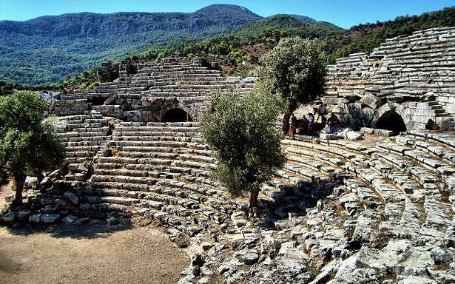
Kaunos ÖrenyeriMuğla · Ausgrabungsstätte Kayseri Arkeoloji MüzesiKayseri · Museum
Kayseri Arkeoloji MüzesiKayseri · Museum Kayseri Atatürk Evi MüzesiKayseri · Museum
Kayseri Atatürk Evi MüzesiKayseri · Museum Keskin Sulu Mağara Yeraltı ŞehriKırıkkale · Unterirdische Stadt
Keskin Sulu Mağara Yeraltı ŞehriKırıkkale · Unterirdische Stadt Kibyra ÖrenyeriBurdur · AusgrabungsstätteKilis MüzesiKilis · Museum
Kibyra ÖrenyeriBurdur · AusgrabungsstätteKilis MüzesiKilis · Museum Kilitbahir Kale MüzesiÇanakkale · Museum
Kilitbahir Kale MüzesiÇanakkale · Museum Klaros Örenyeriİzmir · AusgrabungsstätteKlazomenai Örenyeriİzmir · AusgrabungsstätteKocaeli Arkeoloji MüzesiKocaeli · Museum
Klaros Örenyeriİzmir · AusgrabungsstätteKlazomenai Örenyeriİzmir · AusgrabungsstätteKocaeli Arkeoloji MüzesiKocaeli · Museum Konuralp MüzesiDüzce · Museum
Konuralp MüzesiDüzce · Museum Konya Arkeoloji MüzesiKonya · Museum
Konya Arkeoloji MüzesiKonya · Museum Konya Atatürk Evi MüzesiKonya · MuseumKonya Etnografya MüzesiKonya · Museum
Konya Atatürk Evi MüzesiKonya · MuseumKonya Etnografya MüzesiKonya · Museum Kossouth Evi MüzesiKütahya · MuseumKurtuluş Savaşı MüzesiAnkara · Museum
Kossouth Evi MüzesiKütahya · MuseumKurtuluş Savaşı MüzesiAnkara · Museum Kuruköprü Anıt Müzesi ve Geleneksel Adana EviAdana · Museum
Kuruköprü Anıt Müzesi ve Geleneksel Adana EviAdana · Museum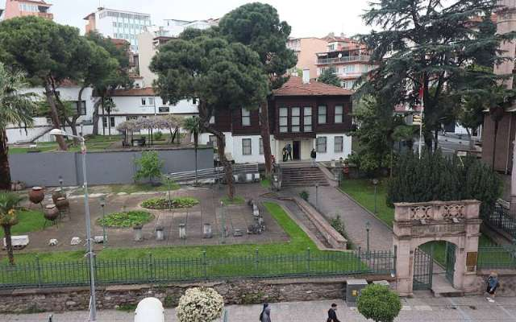
Kuva-Yi Milliye MüzesiBalıkesir · Museum Kültepe ÖrenyeriKayseri · AusgrabungsstätteKütahya MüzesiKütahya · MuseumKüçük Ayvasıl St. Anna KilisesiTrabzon · SakralbauKırklareli MüzesiKırklareli · MuseumKırşehir MüzesiKırşehir · Museum
Kültepe ÖrenyeriKayseri · AusgrabungsstätteKütahya MüzesiKütahya · MuseumKüçük Ayvasıl St. Anna KilisesiTrabzon · SakralbauKırklareli MüzesiKırklareli · MuseumKırşehir MüzesiKırşehir · Museum Kız Kulesiİstanbul · Burg & historisches Bauwerk
Kız Kulesiİstanbul · Burg & historisches Bauwerk Labraunda ÖrenyeriMuğla · Ausgrabungsstätte
Labraunda ÖrenyeriMuğla · Ausgrabungsstätte Lagina ÖrenyeriMuğla · Ausgrabungsstätte
Lagina ÖrenyeriMuğla · Ausgrabungsstätte Laodikeia ÖrenyeriDenizli · AusgrabungsstätteLatifoğlu KonağıTokat · Museum
Laodikeia ÖrenyeriDenizli · AusgrabungsstätteLatifoğlu KonağıTokat · Museum Likya Uygarlıkları Müzesi ve Andrıake ÖrenyeriAntalya · Ausgrabungsstätte
Likya Uygarlıkları Müzesi ve Andrıake ÖrenyeriAntalya · Ausgrabungsstätte Limyra ÖrenyeriAntalya · AusgrabungsstätteLivapaşa Konağı Etnografya MüzesiKastamonu · MuseumMaden MüzesiZonguldak · Museum
Limyra ÖrenyeriAntalya · AusgrabungsstätteLivapaşa Konağı Etnografya MüzesiKastamonu · MuseumMaden MüzesiZonguldak · Museum Magnesia ÖrenyeriAydın · AusgrabungsstätteMalatya Atatürk Anı Evi ve Etnoğrafya MüzesiMalatya · Museum
Magnesia ÖrenyeriAydın · AusgrabungsstätteMalatya Atatürk Anı Evi ve Etnoğrafya MüzesiMalatya · Museum Malatya MüzesiMalatya · MuseumMalazgirt MüzesiMuş · Museum
Malatya MüzesiMalatya · MuseumMalazgirt MüzesiMuş · Museum Mamure KalesiMersin · Burg & historisches Bauwerk
Mamure KalesiMersin · Burg & historisches Bauwerk Manisa Akhisar Müzesi ve Akhisar Tepe MezarlığıManisa · Ausgrabungsstätte
Manisa Akhisar Müzesi ve Akhisar Tepe MezarlığıManisa · Ausgrabungsstätte Manisa MüzesiManisa · Museum
Manisa MüzesiManisa · Museum Mardin MüzesiMardin · MuseumMarmaris MüzesiMuğla · MuseumMazı Yeraltı ŞehriNevşehir · Unterirdische Stadt
Mardin MüzesiMardin · MuseumMarmaris MüzesiMuğla · MuseumMazı Yeraltı ŞehriNevşehir · Unterirdische Stadt Mehmet Akif Ersoy Hatıra Eviİstanbul · MuseumMehmet Cabir Alper Arkeoloji MüzesiBatman · Museum
Mehmet Akif Ersoy Hatıra Eviİstanbul · MuseumMehmet Cabir Alper Arkeoloji MüzesiBatman · Museum Mersin Atatürk Evi MüzesiMersin · Museum
Mersin Atatürk Evi MüzesiMersin · Museum Mersin Kız KalesiMersin · Burg & historisches BauwerkMersin MüzesiMersin · MuseumMersin Tarsus MüzesiMersin · Museum
Mersin Kız KalesiMersin · Burg & historisches BauwerkMersin MüzesiMersin · MuseumMersin Tarsus MüzesiMersin · Museum Meryem Ana ManastırıGiresun · Sakralbau
Meryem Ana ManastırıGiresun · Sakralbau Metropolis Örenyeriİzmir · Ausgrabungsstätte
Metropolis Örenyeriİzmir · Ausgrabungsstätte Mevlana MüzesiKonya · MuseumMevlevihane MüzesiAntalya · Museum
Mevlana MüzesiKonya · MuseumMevlevihane MüzesiAntalya · Museum Midas Yazılıkaya ÖrenyeriEskişehir · Ausgrabungsstätte
Midas Yazılıkaya ÖrenyeriEskişehir · Ausgrabungsstätte Milas Beçin Kalesi ve ÖrenyeriMuğla · Ausgrabungsstätte
Milas Beçin Kalesi ve ÖrenyeriMuğla · Ausgrabungsstätte Milas Euromos ÖrenyeriMuğla · AusgrabungsstätteMilas Taş Eserler MüzesiMuğla · Museum
Milas Euromos ÖrenyeriMuğla · AusgrabungsstätteMilas Taş Eserler MüzesiMuğla · Museum Milas Uzunyuva Anıt Mezarı ve Müze KompleksiMuğla · AusgrabungsstätteMilas İassos Balık Pazarı MüzesiMuğla · Museum
Milas Uzunyuva Anıt Mezarı ve Müze KompleksiMuğla · AusgrabungsstätteMilas İassos Balık Pazarı MüzesiMuğla · Museum Milet MüzesiAydın · Museum
Milet MüzesiAydın · Museum Milet ÖrenyeriAydın · AusgrabungsstätteMucur Yeraltı ŞehriKırşehir · Unterirdische Stadt
Milet ÖrenyeriAydın · AusgrabungsstätteMucur Yeraltı ŞehriKırşehir · Unterirdische Stadt Mudanya Mütareke Evi MüzesiBursa · Museum
Mudanya Mütareke Evi MüzesiBursa · Museum Muğla Bodrum Mausoleium Anıt MüzesiMuğla · Museum
Muğla Bodrum Mausoleium Anıt MüzesiMuğla · Museum Muğla Knidos ÖrenyeriMuğla · Ausgrabungsstätte
Muğla Knidos ÖrenyeriMuğla · Ausgrabungsstätte Muğla MüzesiMuğla · MuseumMuş MüzesiMuş · Museum
Muğla MüzesiMuğla · MuseumMuş MüzesiMuş · Museum Myra ÖrenyeriAntalya · Ausgrabungsstätte
Myra ÖrenyeriAntalya · Ausgrabungsstätte Namazgâh Tabyası MüzesiÇanakkale · Museum
Namazgâh Tabyası MüzesiÇanakkale · Museum Necmi İğe Evi Etnografya MüzesiEdirne · MuseumNevşehir Hacıbektaş Arkeoloji ve Etnografya MüzesiNevşehir · MuseumNevşehir Hacıbektaş Atatürk Evi MüzesiNevşehir · Museum
Necmi İğe Evi Etnografya MüzesiEdirne · MuseumNevşehir Hacıbektaş Arkeoloji ve Etnografya MüzesiNevşehir · MuseumNevşehir Hacıbektaş Atatürk Evi MüzesiNevşehir · Museum Nevşehir MüzesiNevşehir · MuseumNilüfer Hatun İmareti Türk İslam Eserleri MüzesiBursa · MuseumNiğde Andaval ÖrenyeriNiğde · AusgrabungsstätteNiğde MüzesiNiğde · Museum
Nevşehir MüzesiNevşehir · MuseumNilüfer Hatun İmareti Türk İslam Eserleri MüzesiBursa · MuseumNiğde Andaval ÖrenyeriNiğde · AusgrabungsstätteNiğde MüzesiNiğde · Museum Nysa Sultanhisar ÖrenyeriAydın · Ausgrabungsstätte
Nysa Sultanhisar ÖrenyeriAydın · Ausgrabungsstätte Olympos ÖrenyeriAntalya · AusgrabungsstätteOrdu MüzesiOrdu · Museum
Olympos ÖrenyeriAntalya · AusgrabungsstätteOrdu MüzesiOrdu · Museum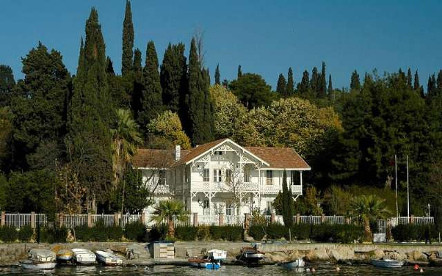
Osman Hamdi Bey MüzesiKocaeli · MuseumOsmaniye MüzesiOsmaniye · MuseumOsmanlı Evi MüzesiBursa · Museum Patara ÖrenyeriAntalya · Ausgrabungsstätte
Patara ÖrenyeriAntalya · Ausgrabungsstätte Perge ÖrenyeriAntalya · Ausgrabungsstätte
Perge ÖrenyeriAntalya · Ausgrabungsstätte Perre ÖrenyeriAdıyaman · Ausgrabungsstätte
Perre ÖrenyeriAdıyaman · Ausgrabungsstätte Pessinus ÖrenyeriEskişehir · Ausgrabungsstätte
Pessinus ÖrenyeriEskişehir · Ausgrabungsstätte Phaselis ÖrenyeriAntalya · Ausgrabungsstätte
Phaselis ÖrenyeriAntalya · Ausgrabungsstätte Priene ÖrenyeriAydın · Ausgrabungsstätte
Priene ÖrenyeriAydın · Ausgrabungsstätte Resim Heykel MüzesiAnkara · Museum
Resim Heykel MüzesiAnkara · Museum Rize Atatürk Evi MüzesiRize · MuseumRize MüzesiRize · Museum
Rize Atatürk Evi MüzesiRize · MuseumRize MüzesiRize · Museum Roma Hamamı ÖrenyeriAnkara · Ausgrabungsstätte
Roma Hamamı ÖrenyeriAnkara · Ausgrabungsstätte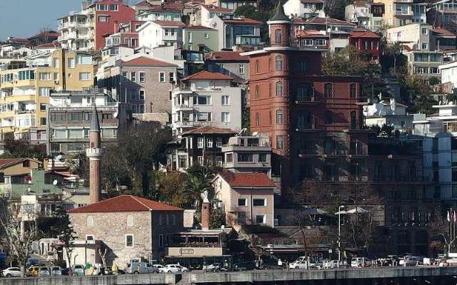
Rumeli Hisarıİstanbul · Burg & historisches Bauwerk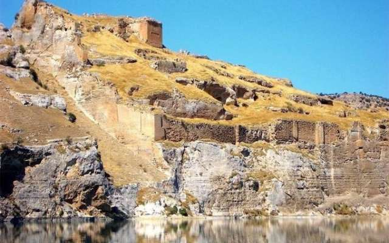
Rumkale ÖrenyeriGaziantep · Ausgrabungsstätte Sagalassos ÖrenyeriBurdur · Ausgrabungsstätte
Sagalassos ÖrenyeriBurdur · Ausgrabungsstätte Sakarya MüzesiSakarya · Museum
Sakarya MüzesiSakarya · Museum Samsun MüzesiSamsun · Museum
Samsun MüzesiSamsun · Museum Saratlı Kırkgöz Yeraltı ŞehriAksaray · Unterirdische Stadt
Saratlı Kırkgöz Yeraltı ŞehriAksaray · Unterirdische Stadt Sardes ÖrenyeriManisa · Ausgrabungsstätte
Sardes ÖrenyeriManisa · Ausgrabungsstätte Sarıkaya Roma HamamıYozgat · Ausgrabungsstätte
Sarıkaya Roma HamamıYozgat · Ausgrabungsstätte Sedir Adası ÖrenyeriMuğla · Ausgrabungsstätte
Sedir Adası ÖrenyeriMuğla · Ausgrabungsstätte Side MüzesiAntalya · Museum
Side MüzesiAntalya · Museum Side ÖrenyeriAntalya · Ausgrabungsstätte
Side ÖrenyeriAntalya · Ausgrabungsstätte Silifke Astım MağarasıMersin · Naturstätte
Silifke Astım MağarasıMersin · Naturstätte Silifke Atatürk Evi ve Etnografya MüzesiMersin · Museum
Silifke Atatürk Evi ve Etnografya MüzesiMersin · Museum Silifke Ayatekla ÖrenyeriMersin · Ausgrabungsstätte
Silifke Ayatekla ÖrenyeriMersin · Ausgrabungsstätte Silifke Cennet Cehennem ObruklarıMersin · Naturstätte
Silifke Cennet Cehennem ObruklarıMersin · Naturstätte Silifke MüzesiMersin · Museum
Silifke MüzesiMersin · Museum Silifke Narlıkuyu Mozaik MüzesiMersin · MuseumSilvan Atatürk Evi MüzesiDiyarbakır · Museum
Silifke Narlıkuyu Mozaik MüzesiMersin · MuseumSilvan Atatürk Evi MüzesiDiyarbakır · Museum Simena ÖrenyeriAntalya · AusgrabungsstätteSinop Arslantorunlar Etnografya MüzesiSinop · MuseumSinop MüzesiSinop · Museum
Simena ÖrenyeriAntalya · AusgrabungsstätteSinop Arslantorunlar Etnografya MüzesiSinop · MuseumSinop MüzesiSinop · Museum Sivas Arkeoloji MüzesiSivas · Museum
Sivas Arkeoloji MüzesiSivas · Museum Sivas Atatürk ve Kongre MüzesiSivas · MuseumSobessos ÖrenyeriNevşehir · AusgrabungsstätteSofraz Anıt MezarıAdıyaman · Ausgrabungsstätte
Sivas Atatürk ve Kongre MüzesiSivas · MuseumSobessos ÖrenyeriNevşehir · AusgrabungsstätteSofraz Anıt MezarıAdıyaman · Ausgrabungsstätte St. Pierre Anıt MüzesiHatay · Museum
St. Pierre Anıt MüzesiHatay · Museum St. Simon ManastırıHatay · Sakralbau
St. Simon ManastırıHatay · Sakralbau Stratonikeia ÖrenyeriMuğla · Ausgrabungsstätte
Stratonikeia ÖrenyeriMuğla · Ausgrabungsstätte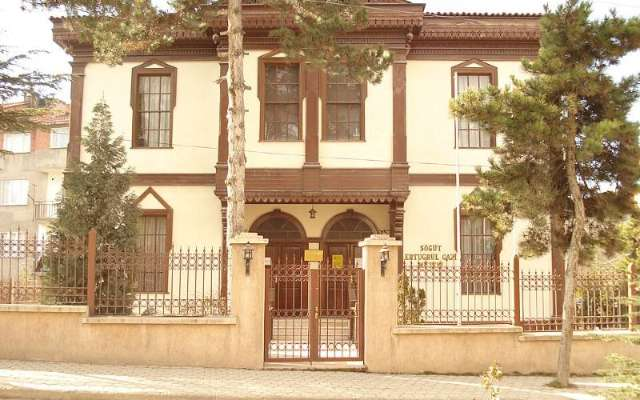
Söğüt Ertuğrul Gazi MüzesiBilecik · Museum Sümela ManastırıTrabzon · SakralbauTaksiyarhis Anıt MüzesiBalıkesir · Museum
Sümela ManastırıTrabzon · SakralbauTaksiyarhis Anıt MüzesiBalıkesir · Museum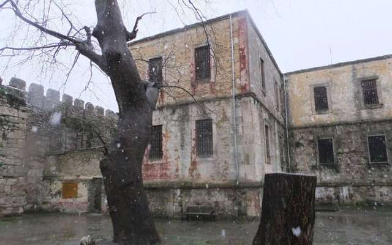
Tarihi CezaeviSinop · Burg & historisches Bauwerk Tarsus St. Paul Anıt MüzesiMersin · Museum
Tarsus St. Paul Anıt MüzesiMersin · Museum Tarsus St. Paul KuyusuMersin · Sakralbau
Tarsus St. Paul KuyusuMersin · Sakralbau Tatlarin Yeraltı ŞehriNevşehir · Unterirdische StadtTekirdağ Muratlı Atatürk Evi MüzesiTekirdağ · MuseumTekirdağ MüzesiTekirdağ · Museum
Tatlarin Yeraltı ŞehriNevşehir · Unterirdische StadtTekirdağ Muratlı Atatürk Evi MüzesiTekirdağ · MuseumTekirdağ MüzesiTekirdağ · Museum Teos Örenyeriİzmir · Ausgrabungsstätte
Teos Örenyeriİzmir · Ausgrabungsstätte Termessos ÖrenyeriAntalya · AusgrabungsstätteTire Müzesiİzmir · MuseumTokat Atatürk Evi ve Etnografya MüzesiTokat · Museum
Termessos ÖrenyeriAntalya · AusgrabungsstätteTire Müzesiİzmir · MuseumTokat Atatürk Evi ve Etnografya MüzesiTokat · Museum Tokat MüzesiTokat · Museum
Tokat MüzesiTokat · Museum Trabzon Müzesi (Kostaki Konağı)Trabzon · Museum
Trabzon Müzesi (Kostaki Konağı)Trabzon · Museum Troya MüzesiÇanakkale · Museum
Troya MüzesiÇanakkale · Museum Tunceli MüzesiTunceli · Museum
Tunceli MüzesiTunceli · Museum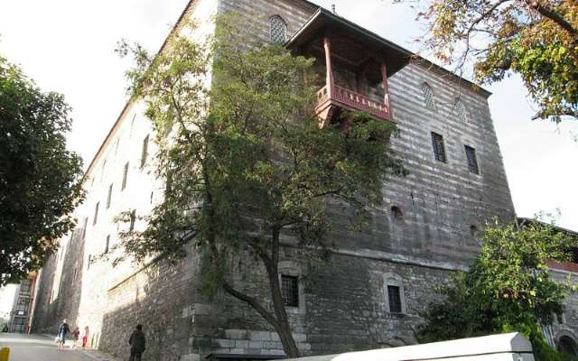
Türk ve İslam Eserleri Müzesiİstanbul · MuseumTürk İslam Eserleri MüzesiEdirne · Museum Türk İslam Eserleri ve Etnografya MüzesiErzurum · MuseumUluborlu MüzesiIsparta · Museum
Türk İslam Eserleri ve Etnografya MüzesiErzurum · MuseumUluborlu MüzesiIsparta · Museum Uzuncaburç ÖrenyeriMersin · AusgrabungsstätteUşak MüzesiUşak · Museum
Uzuncaburç ÖrenyeriMersin · AusgrabungsstätteUşak MüzesiUşak · Museum Van KalesiVan · Burg & historisches Bauwerk
Van KalesiVan · Burg & historisches Bauwerk Van MüzesiVan · Museum
Van MüzesiVan · Museum Yalvaç MüzesiIsparta · Museum
Yalvaç MüzesiIsparta · Museum Yenişehir Şemaki Evi MüzesiBursa · Museum
Yenişehir Şemaki Evi MüzesiBursa · Museum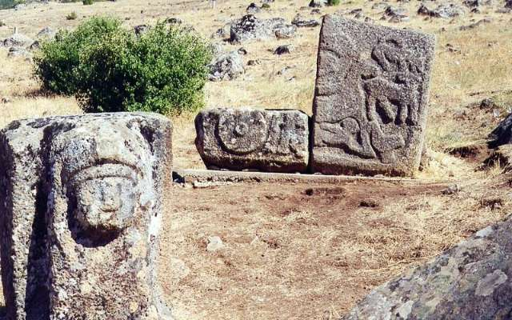
Yesemek ÖrenyeriGaziantep · Ausgrabungsstätte Yeşilhisar Soğanlı ÖrenyeriKayseri · Ausgrabungsstätte
Yeşilhisar Soğanlı ÖrenyeriKayseri · Ausgrabungsstätte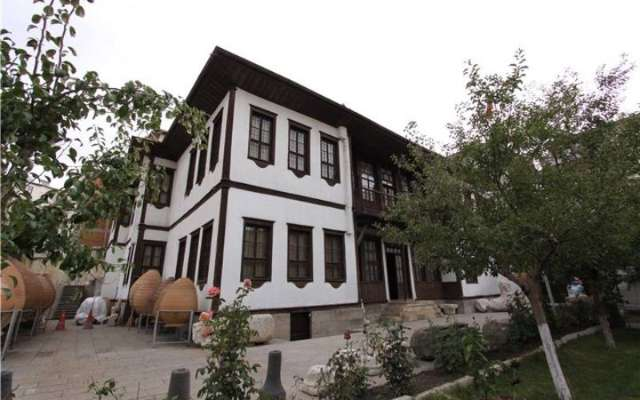
Yozgat MüzesiYozgat · Museum Yörük Ali Efe Evi MüzesiAydın · Museum
Yörük Ali Efe Evi MüzesiAydın · Museum Zeki Müren Sanat MüzesiMuğla · Museum
Zeki Müren Sanat MüzesiMuğla · Museum Zeugma Mozaik MüzesiGaziantep · Museum
Zeugma Mozaik MüzesiGaziantep · Museum Zeugma ÖrenyeriGaziantep · Ausgrabungsstätte
Zeugma ÖrenyeriGaziantep · Ausgrabungsstätte Ziya Gökalp MüzesiDiyarbakır · MuseumÇanakkale Destanı Tanıtım MerkeziÇanakkale · MuseumÇanakkale Hilal-i Ahmer Canlandırma AlanıÇanakkale · Museum
Ziya Gökalp MüzesiDiyarbakır · MuseumÇanakkale Destanı Tanıtım MerkeziÇanakkale · MuseumÇanakkale Hilal-i Ahmer Canlandırma AlanıÇanakkale · Museum Çankırı MüzesiÇankırı · Museum
Çankırı MüzesiÇankırı · Museum Çavuştepe KalesiVan · Burg & historisches BauwerkÇevlik ÖrenyeriHatay · Ausgrabungsstätte
Çavuştepe KalesiVan · Burg & historisches BauwerkÇevlik ÖrenyeriHatay · Ausgrabungsstätte Çeşme Müzesiİzmir · Museum
Çeşme Müzesiİzmir · Museum Çini MüzesiKütahya · Museum
Çini MüzesiKütahya · Museum Çorum MüzesiÇorum · MuseumÖdemiş Müzesiİzmir · Museum
Çorum MüzesiÇorum · MuseumÖdemiş Müzesiİzmir · Museum Özkonak Yeraltı ŞehriNevşehir · Unterirdische StadtÜrgüp MüzesiNevşehir · Museum
Özkonak Yeraltı ŞehriNevşehir · Unterirdische StadtÜrgüp MüzesiNevşehir · Museum İshak Paşa SarayıAğrı · Burg & historisches Bauwerk
İshak Paşa SarayıAğrı · Burg & historisches Bauwerk İslam Bilim ve Teknoloji Tarihi Müzesiİstanbul · Museum
İslam Bilim ve Teknoloji Tarihi Müzesiİstanbul · Museum İstanbul Arkeoloji Müzeleriİstanbul · Museum
İstanbul Arkeoloji Müzeleriİstanbul · Museum İstanbul Galata Kulesiİstanbul · Burg & historisches Bauwerkİstanbul Havalimanı Müzesiİstanbul · Museum
İstanbul Galata Kulesiİstanbul · Burg & historisches Bauwerkİstanbul Havalimanı Müzesiİstanbul · Museum İzmir Arkeoloji Müzesiİzmir · Museumİzmir Atatürk Müzesiİzmir · Museum
İzmir Arkeoloji Müzesiİzmir · Museumİzmir Atatürk Müzesiİzmir · Museum İzmir Kültür Sanat Fabrikasıİzmir · Museumİzmir Resim Heykel Müzesiİzmir · Museum
İzmir Kültür Sanat Fabrikasıİzmir · Museumİzmir Resim Heykel Müzesiİzmir · Museum İznik MüzesiBursa · MuseumŞanlıurfa Arkeoloji MüzesiŞanlıurfa · Museum
İznik MüzesiBursa · MuseumŞanlıurfa Arkeoloji MüzesiŞanlıurfa · Museum Şanlıurfa KalesiŞanlıurfa · Burg & historisches Bauwerk
Şanlıurfa KalesiŞanlıurfa · Burg & historisches Bauwerk